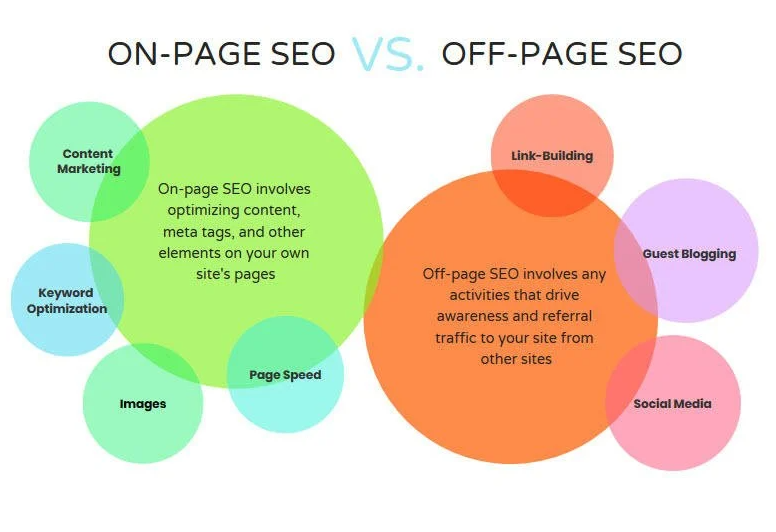

Off-Page SEO
Off-page SEO includes actions that happen outside of a website but can still affect its reputation and search visibility. Instead of changing the content or code on a page, off-page SEO focuses on how other websites and online users respond to that content.
Search engines may view outside links and mentions as signs that a website is useful or trustworthy. These signals are more valuable when they come from reliable sources that are connected to the same subject as the website.

Backlinks
A backlink is a link from another website that points to a page on your website. Backlinks can introduce new visitors to a site and help search engines recognize that other sources consider the content worth sharing.
The quality of a backlink matters more than simply having a large number of links. A link from a trusted and relevant website usually provides more value than several links from unrelated or unreliable pages.
Earning Useful Links
Websites can earn links by publishing information that other people find helpful. Original research, detailed explanations, tutorials, and useful resources may give other website owners a reason to link to the page.
Website owners can also build relationships with organizations and creators in the same field. The goal should be to earn genuine attention instead of paying for large amounts of low-quality links.
Brand Mentions and Online Reputation
Off-page SEO can also include mentions of a website or organization even when those mentions do not contain a direct link. Reviews, discussions, and recommendations can help more people recognize a website and understand what it offers.
A positive online reputation develops when a website provides dependable information and responds professionally to its audience. Trust usually takes time to build and cannot be created through one link or one social media post.
Local Listings
Local businesses can improve their online presence by keeping their business information accurate across directories and map services. Correct names, locations, hours, and contact information make it easier for users to find the business.
Reviews can also affect how people view a local business. Honest feedback gives potential customers more information and allows the business to respond when a customer has a concern.
Why Off-Page SEO Matters
On-page and technical SEO help make a website understandable and usable. Off-page SEO supports those efforts by building recognition outside of the website. A site is more likely to develop authority when its content is useful enough for other people to reference and recommend.